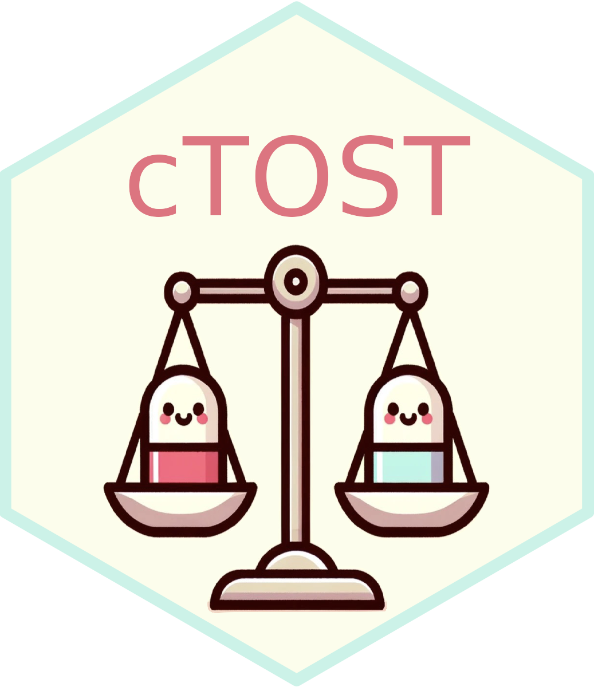

cTOST Overview 
Overview
This repository holds the cTOST R package. This package contains the function tost which provides an assessment of equivalence in the univariate framework based on the state-of-the-art Two One-Sided Tests (TOST). In addition, the package contains the functions atost and dtost, two corrective procedures applied to the TOST in the univariate framework in order to ensure the preservation of the Type I error rate at the desired nominal level and a uniform increase in power. These two functions output an assessment of equivalence in the univariate framework after their respective corrections is applied. More details can be found in Boulaguiem et al. (2024) that you can access via this link.
Install Instructions
The cTOST package is available on both CRAN and GitHub. The CRAN version is considered stable, whereas the GitHub version is subject to modifications/updates which may lead to installation problems or broken functions. You can install the stable version of the cTOST package with:
install.packages("cTOST")In order to install the latest version from GitHub, it is required to pre-install the devtools dependency. Run the following command if you do not have it already installed:
install.packages("devtools")The package is then installed with the following command:
devtools::install_github("yboulag/cTOST")Note that Windows users are assumed to have Rtools installed (if this is not the case, please visit this link).
How to cite
@Manual{boulaguiem2023ctost,
title = {cTOST: Finite Sample Correction of The TOST in The Univariate Framework},
author = {Younes Boulaguiem and Stéphane Guerrier and Dominique-Laurent Couturier},
year = {2023},
note = {R package version 1.0.1},
url = {https://github.com/yboulag/cTOST},
}License
The license this source code is released under is the GNU AFFERO GENERAL PUBLIC LICENSE (AGPL) v3.0. Please see the LICENSE file for full text. Otherwise, please consult GNU which will provide a synopsis of the restrictions placed upon the code.
References
Boulaguiem, Y., Quartier, J., Lapteva, M., Kalia, Y. N., Victoria-Feser, M. P., Guerrier, S., & Couturier, D. L., “Finite Sample Adjustments for Average Equivalence Testing”, Statistics in Medicine, 2024, https://doi.org/10.1002/sim.9993.